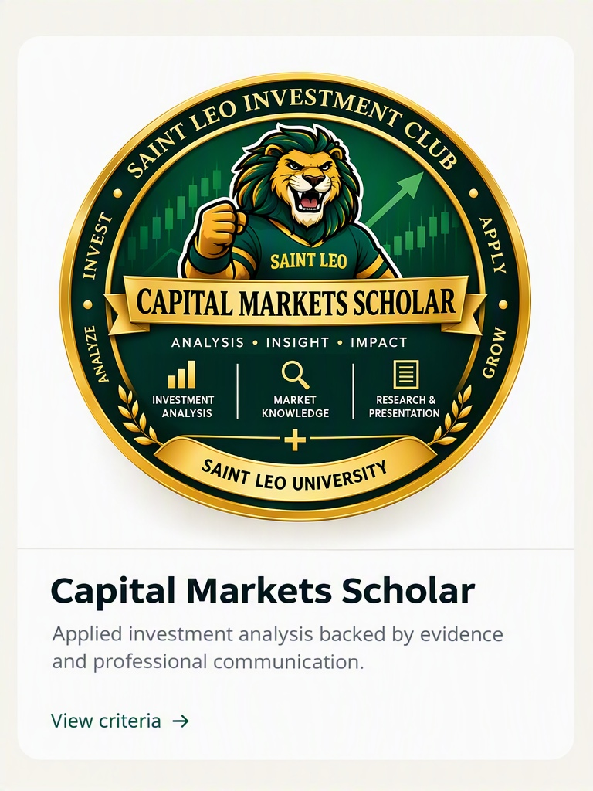
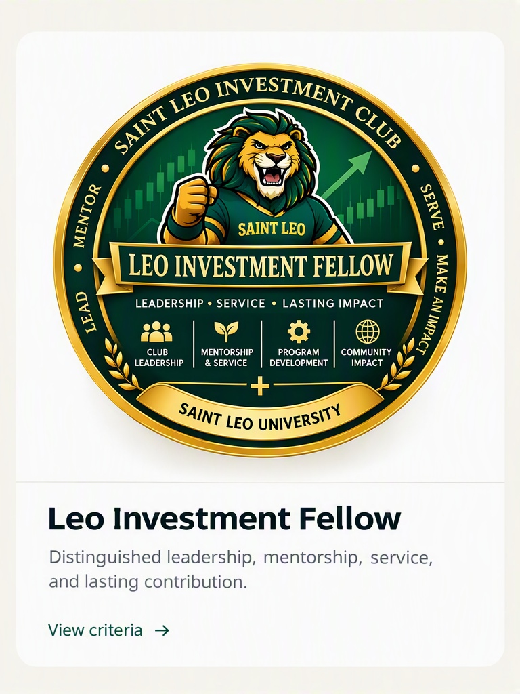

Finance Explorer
Foundational engagement with finance education and industry programming.
Professional Credential Pathway
Verify a credentialEnter the credential ID shown on the recipient’s credential record.
The verifier opens the credential-specific public record. An unknown ID displays “Record not found.”
Foundational engagement with finance education and industry programming.

Sustained engagement with alumni, employers, and finance professionals.

